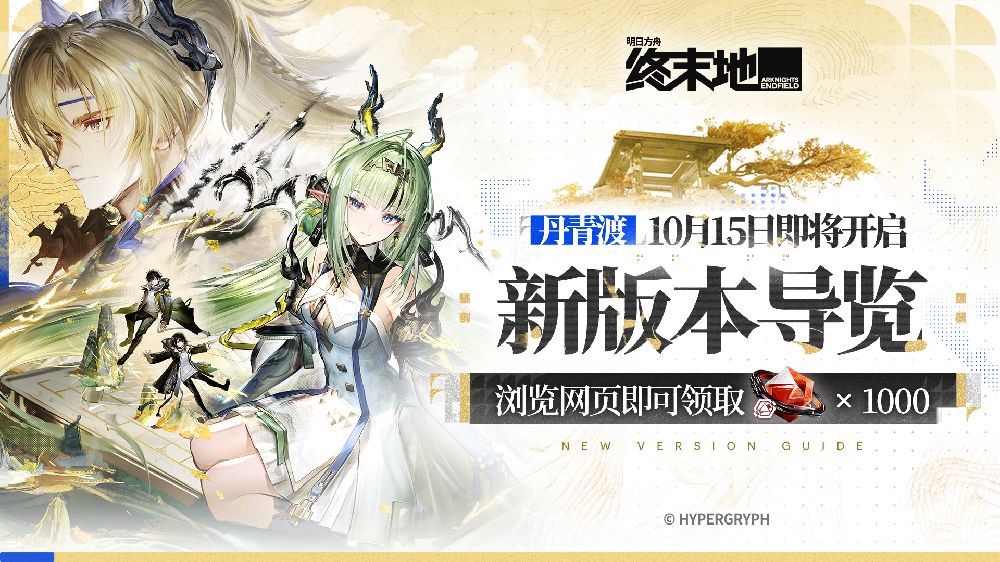
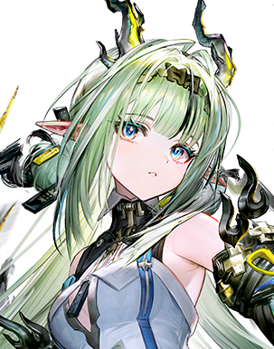
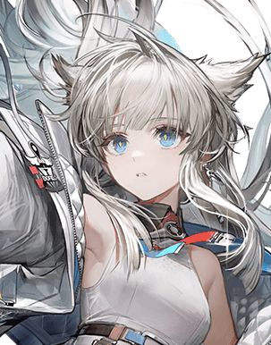

《明日方舟：终末地》是"明日方舟"IP 的全新篇章。 故事发生在遥远的行星"塔卫二"：玩家将作为"管理员"， 带领终末地工业的专业团队深入荒野，勘探资源、建设设施， 让文明的火种在陌生的土地上生根发芽。
游戏采用 3D 即时制战斗：小队成员自动协同作战， 玩家则可以抓住时机释放强力技能，打出精彩的连携配合。 探索之余，工业化的基地建设玩法让你亲手把荒原变成繁荣的家园。
宏大的开放场景、硬朗的工业美术风格、延续自明日方舟的世界观彩蛋—— 无论你是老玩家还是新朋友，都能在这里找到属于自己的乐趣。

滑动认识终末地工业的干员们（立绘取自官方网站公开素材）

行动沉稳可靠的干员，战斗之余最爱打理花草。安静的日常背后，是随时可以托付后背的可靠。

开朗热忱的拓荒先锋，队伍里不可或缺的多面手，总能用笑容感染身边的伙伴。
如烈焰般炽热的战斗专家，永远冲锋在最前线，把危险与阻碍一并烧成灰烬。
冷静干练、执行果断的精英干员，是拓荒队伍在荒野行动中的定心石。
支持鼠标拖拽 / 触屏滑动 / 键盘左右键切换，每 6 秒自动轮换
规划产线、铺设设施，从零开始把荒原建成繁荣的工业重镇。
小队自动协同、技能手动释放，爽快连招与战术布局兼得。
峡谷、荒漠、遗迹……穿越多样的地貌，风景尽收眼底。
熟悉的设定以全新面貌登场，老玩家会心一笑的彩蛋遍地开花。
| 游戏类型 | 3D 策略 RPG / 开放探索 |
| 开发运营 | 鹰角网络 |
| 题材风格 | 工业科幻 / 拓荒建设 |
| 所属IP | 明日方舟系列新作 |
| 官方网站 | endfield.hypergryph.com ↗ |